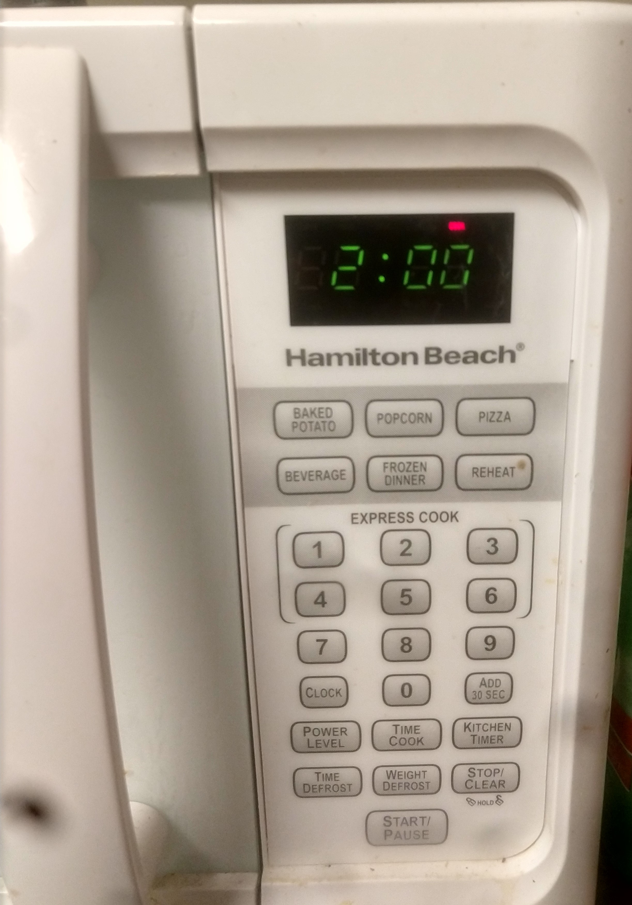
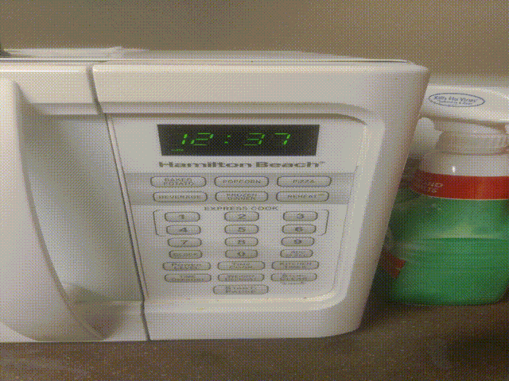

I am using my home microwave oven for this project.
Display
To the top ⥣
My Microwave has a tiny display, that is good enough to set the time,
see the remaining time or check the time of the day.
Common sequence/Common mistake: I am very stressed due to a project submission
and I want to drink some tea. I go to the kitchen to heat the water for my
tea I pour water into cup and put it in the Microwave oven and start cooking
by pressing down onone of the express cook options. It beeps twice, giving
me feedback that timer is already set for something else.


First image is when timer is set. Second Image is Time of the day.
When I check the display, I see in very tiny letters saying cook. Now I
have to click start/stop button or reset it and give a new time. This
seemingly small clicks to heat my water is very annoying. Even though
there is some indication that time of the day is being displayed like ':'
is blinking which is hardly noticeable at a single glance.
Solution: Add different colored LEDs to give the user feedback
on what is being displayed at the moment. A red LED can be used to display
the timer like in the image below. Now a days LEDs can show multiple colors
according to the voltage fed to them. If those LEDs are used, different
colors can be displayed.

Alternatively, a new feature can be added to the microwave. If cooking
stops in the middle, the timer should reset after a certain period of time.
There is no use in preserving the remaining cooking time hours after the
timer is stopped in the middle.
Stop/Clear button
To the top ⥣
The stop/clear button on my microwave has a small closed and open lock saying
"hold"
I have no idea what it does and I have tried to hold the button down to see
if it locks my microwavave's door.
Power level
To the top ⥣
One of the Rare uses that I can think of is selecting the power level
for the cooking. Once in a lifetime I will try a recepie which will tell me
to select the power level. I have tried it in the past and I was not able to
figure it out how to set the power level.Microwave telling me how to
use this option This control unit has only one mechanism of telling me
that it is the wrong option, which is beeping twice.
while working this report I was able to figure out how to select power level.
Even though I was able to figure it out after few tries(while hurting my fingers)
I was still confused on what the numbers meant. Common mistake
I was confused on when to select the power level, before clicking start or
after start as I was able to change power level to some unknown level.
See the below gif.